OUM |
Technique Overview |
||
Method Navigation |
Current Page Navigation |
||
|
|
||||||||
The purpose of this technique is to provide guidelines for capacity planning when using a service-oriented architecture. The shared nature of SOA makes capacity planning particularly difficult. You can no longer simply plan for the capacity of projects and applications independently, but must consider the services that they will consume and the amount of consumption required by each consumer. Further, you must ensure that in allocating additional consumption you do not inadvertently cause the service or other services sharing the same resources to begin violating expected SLA levels.
SOA capacity planning is much more than simply analyzing hardware utilizations on average and at peak and doing a quick computation with respect to how much can be allocated before the physical resource maximums are reached. It requires that limits be measured for existing services to determine where SLAs begin to break down. It also requires an understanding of how much additional resources will be required to support usage estimates for a new service consumer which can be analyzed against what is left over to prevent SLA violations.
Further, if consumption monitoring is not in place for the operational environment then there is no way to get an estimate of accuracy with respect to current consumption levels. Also, if consumption is not being managed, then there is no way to predict available capacity as it may be completely and unexpectedly maxed out at any time.
Requirements: Capacity Planning
The following represent the potential high-level requirements for capacity planning within a SOA:
Strategy: Capacity Planning
If an organization waits until a service is operational before thinking about provisioning, then they have waited too long. Once a service is deployed, it is no longer in a completely controllable environment.
The capacity planning process for a service begins when it is defined, and ends when it is retired. This allows for the appropriate provisions to be taken during planning and design to forecast the expected service usage. Further, implementation details may be necessary to ensure that consumption is, at a minimum, monitored. This allows the usage data to be correlated to utilization levels in order to establish overhead and estimate accuracy. Also, during service delivery, the opportunity should be taken to test the service in isolation to establish the relationship between throughput and operational footprints in addition to establishing utilization thresholds with respect to expected SLAs established in the service’s contract. Finally, the engineering process should take into account any specialized types of usage agreements that may be established with this particular service which may need to be engineered into the service.
Capacity planning activities take place throughout the service lifecycle. The illustration below depicts the capacity planning aspects in context of the service lifecycle.
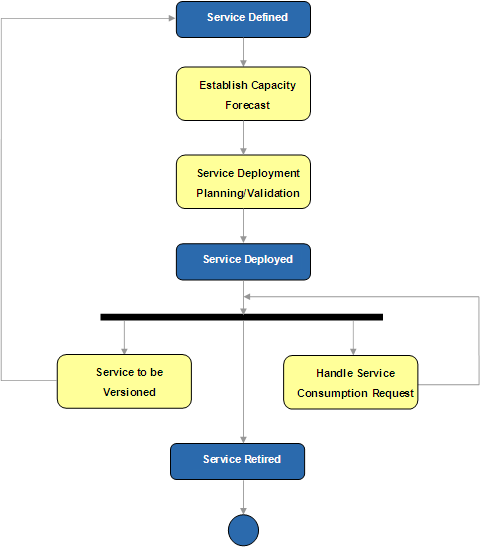
After a service is defined, capacity forecasting should take place to forecast the expected usage for the service over a forward looking time period. This information combined with the information collected during isolation testing provide the basis for deployment planning for the service in addition to the baseline data used to measure the impact of allocating more capacity to the service when handling future provisioning requests.
Once deployed, a service enters its steady-state environment until one of the following three conditions takes place:
SOA Capacity Plan - The SOA Capacity Plan contains a capacity plan for the services to be deployed in a SOA. That includes a capacity forecast for each service to be deployed, what kind of utilization levels will be required, as well as the required bandwidth for each service consumer request. It also includes all the required instrumentation data you will need to determine this, and to validate its accuracy.
No. |
Step | Component | Component Description |
|---|---|---|---|
1 |
Establish capacity forecast. | Capacity Forecast | The Capacity Forecast contains a Service capacity forecast which includes the result of an analysis of the expected current and future consumption of the services from a potential consumer standpoint. |
2 |
Perform service deployment planning. | Service Deployment Planning | The Service Deployment Planning describes the current utilization levels, which includes service consumption rates, as well as the forecasted consumption for the service to be deployed. The component also includes forecasts for the existing services that are deployed on the target environments. |
3 |
Manage consumption. | Data Authorities | The Capacity Validation includes for each consumer request to consume a shared service to determine whether the request may be granted with the current bandwidth, or whether additional bandwidth will be required before the request is granted. |
4 |
Validate accuracy. | Accuracy Validation | The Accuracy Validation includes the result from monitoring service consumption against the production environment to understand whether the test effort is returning valid results. |
5 |
Determine service versioning impact. | Service Versioning Capacity Impact | The Service Versioning Capacity Impact includes the results from a revalidation of the service from a capacity perspective. |
6 |
Determine instrumentation entities support of capacity planning. | Capacity Planning Instrumentation Entities | The Capacity Planning Instrumentation Entities includes a definition of the instrumentation entities that are required for capacity planning including their relationships. |
7 |
Determine service engineering instrumentation data. | Service Engineering Instrumentation Data | The Service Engineering Instrumentation Data includes a definition of the required service engineering instrumentation data that will play a role to support capacity planning throughout the service lifecycle. |
| 8 | Determine technology and runtime instrumentation data. | Technology and Runtime Instrumentation Data | The Technology and Runtime Instrumentation Data includes a definition of the required technology and runtime instrumentation data that will be required to be able to perform cross-checks to validate accuracy and compute operational overhead. |
Once a service candidate has been approved for realization, and is scheduled for release it enters into Service Delivery. The first stage of Service Delivery is Service Definition, where service boundaries are defined and followed by the realization of the service’s contract (producer contract). At this stage it is also appropriate to perform capacity forecasting for the service.
Service capacity forecasting is very similar to the exercise of doing capacity planning for an application; only in this case you are analyzing the expected current and future consumption of the service from a potential consumer standpoint. This is important because the forecasted capacity for the service will be an important determining factor in service deployment, as an environment that can handle the currently expected capacity, and grow to support the forecasted capacity must be selected for the implementation components of the service.
It is important to instrument the service capacity forecasts as they will play a role in consumption management (service provisioning) as well as environment planning for future services.
Deployment planning begins with understanding current utilization levels, which includes service consumption rates, in addition to examining the forecasted consumption for the service to be deployed. Further, the forecasts for the existing services deployed on the target environments must also be considered in the exercise.
Another aspect that needs to be considered is the maximum resource levels that can be sustained in the environment without breaking previously established SLAs. This boundary may not simply be the physical maximum of the resources on the hardware. For instance, a service may have a contracted SLA indicating that a particular operation will return in under one second. Further, this operation has been deployed on a four CPU server which can sustain a load average of up to 8.0 before experiencing a condition known as CPU thrashing, where response times increase exponentially with respect to increasing load. Therefore, 8.0 is the physical maximum for CPU load average on the server. However, during testing it was discovered that the SLA for the service could not be sustained when a load average greater than 6.8 was observed. This means, that the maximum load that this server can sustain is 6.8 while maintaining its established SLAs for the service operation. Therefore, when inspecting the viability of a particular host for a service the physical capacity available for new consumption is bound by the SLA barriers established by the service contracts governing the relevant components of the implementation hosted on the hardware.
In order to perform deployment planning with any level of accuracy, information instrumented from the operational environment and data instrumented through service testing must be utilized. The data collected through testing provides the basis for understanding how much resource impact the new service will have on its hosting environments upon deployment under different load conditions. The data collected from production will provide the basis for determining accuracy in capacity estimates in addition to providing an overall gauge with respect to overhead. Further, the production data provides information needed to create a set of blended test scenarios that more closely maps the operating conditions that the potential service may be deployed in.
The production data needed requires that consumption be monitored for each service operation. This allows the deployment planners (and later those doing commissioning) to have the necessary data needed to simulate usage patterns, measure load-estimate accuracy, and estimate the amount of resources available for additional consumption of existing services or those available for hosting new services.
The rest of the data needed to support the capacity planning processes, such as deployment planning and service provisioning comes from service testing. The service testing strategy needs to include a suite of tests required to support the capacity planning processes.
The test environment is ideal for capacity planning because the environment is completely controlled (and if it is not a controlled environment, then a best practice would be to make it one!). The fact that the environment is controlled enables the tests to provide resource consumption levels isolated from the service. Therefore, estimates with respect to resource SLA barriers and average resource increment for additional load can be established from the test environment. Further, the amount of resource bandwidth required for a new service deployment can be gleaned through these tests.
When a suitable hosting environment is established for a service a certain amount of bandwidth should be allocated for the service. This does not necessarily need to be enough bandwidth to fulfill the entire capacity forecast, but it should be enough to scale the service for sometime before the expansion is required. The bandwidth needs to be instrumented so that when future consumption requests are encountered for the service the available bandwidth allocated to the service can be examined. If the bandwidth will be exceeded then a decision on expansion feasibility will be necessary, or perhaps limiting the amount of consumption for the new consumer will be necessary. An example is illustrated below:
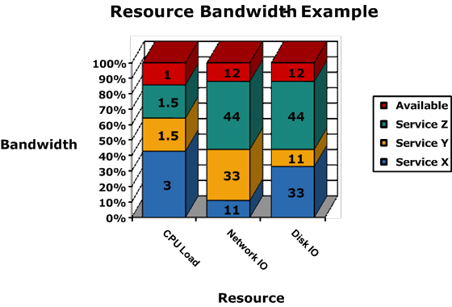
If the hosting server has four CPUs then the physical maximum is a load average of 8.0. However, the example illustrates the maximum of 7.0 as this is what is required in order to sustain SLAs for all services utilizing the hardware. From the example above Service Y is allowed to utilize a load average of 1.5 of the overall 7.0. Therefore it should be tuned to not exceed that level of CPU load. This type of tuning is typically only necessary in environments where non-uniform resource consumption patterns exist across co-deployed servers. For instance, if one service typically performs long running, CPU intensive operations; and another service is performing short running, IO intensive operations; then the resource consumption pattern is considered to be non-uniform. If all services generally have the same kind of resource consumption pattern, then it is considered to be uniform, and independent bandwidth allocation is not necessary. A good example of uniform resource consumption would be the use of an enterprise service bus doing service routing activities. In this case, most of the operations requiring resources will take a similar amount of resources to complete.
Another alternative is to utilize a priority based system for non-uniform resource consumption patterns, where lower priority services give way to higher priority ones. Typically higher priority services are determined by the severity of their SLAs; where higher SLA levels will result in a higher priority setting. This type of tuning system makes SLA guarantees much more difficult to sustain, but does result in more optimal usage of system resources.
Regardless of the tuning system or strategy, currently it is not possible to get a perfect match. Therefore, regardless of the strategy chosen, instrumentation should be utilized to monitor the expected SLAs and possibly even send alerts when SLAs are close to being exceeded for a sustained period of time.
Note: The load average CPU measurement is a neutral CPU resource consumption indicator and provides a powerful tool in SOA performance engineering. Measuring CPU percentage is a non-neutral indicator as it begins to indicate its maximum value when the machine is only 50% loaded. Further CPU percentage does not consider throughput and therefore you cannot use it to gauge the difference in overall CPU consumption between two different types of operations.
Load average is a useful indicator because it can be used to compare CPU consumption regardless of the nature of the work being done by the CPU on behalf of the service. If a server has N CPUs then its CPU resource is considered to be completely consumed when a load average of 2.0 x N is reached. This means, that on average, there is an operation on the CPU and one and only one additional operation waiting for each CPU. Anything higher will cause the CPU resource to backup, and response times will begin to increase exponentially with increasing load. If a CPU percentage indicator is used the CPUs will show 100% utilized with a load average of N. This is misleading as the server is only really half loaded at that time. Further, CPU percentage is indicative of the amount of throughput being placed on the CPU.
For instance consider two separate services that perform fundamentally different types of operations. One service is a forecast service that gathers a great deal of information and then spends a great deal of time parsing and transforming results before completion. Another service simply hits a database and returns the result back to the caller. If each service is given 2.0 for a load average bandwidth, then they are both allowed to send equal load through the CPU. For the second service with the short running operations, this means that it will be able to sustain a much higher throughput level than the other service since its transactions are shorter and require very little CPU. The other service will be constrained to a much smaller throughput as each operation spends much longer on the CPU. If a throttling strategy is going to be used to control resource consumption then the first service (with the lengthy and CPU intensive operations) would be allocated very few worker threads. The second service would be provided significantly more worker threads. Finally, if the consumption forecast for the first service demands a large throughput, then this service may need to be deployed on its own hardware with a large number of CPUs, horizontally scaled across many servers, or possibly re-engineered to perform its operations more efficiently.
The important concept is that when throttling is used (and measured using load averages), it prevents a single service from utilizing more of the CPU resource than allocated to it, which allows for the prevention of a single service adversely affecting how much resource is available for other services.
As mentioned earlier, testing plays a large role in establishing the information necessary to perform deployment planning and consumption management effectively. The following sets of tests should be executed against each service during the test cycles and after any significant changes for the purpose of supporting the capacity planning processes.
These tests are described in detail below:
This test measures the overall performance that a service will provide at various levels of resource consumption. It needs to be executed for every operation that can be uniquely provisioned for the service. A best practice would be to execute the test for every operation.
The illustration below provides the expected output from executing a SLA Barrier Isolation test against an operation.
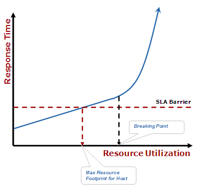
Infrastructure Capacity Limits vs Service SLAs
When the test is performed it commences with a throughput of zero. Load is then uniformly added in increments. Response times and resource utilizations are observed and recorded at each increment in load. When SLA Barriers are exceeded the increment is noted. Upon the breaking of the SLA barriers, the maximum resource utilization is recorded as the resource utilization recorded during the previous load increment. The test continues until a non-linear increase in response time is recorded when incrementing load. This indicates that the physical maximum has been reached for one or more resources (the breaking point has been exceeded). Obviously the most desirable result is that the SLA Barrier for an operation is not reached until it is very near the physical resource barrier (or breaking point).
For each operation a linear equation is recorded as follows for each resource measured:
RT = m x RU + b
Where RT is response time and RU is Resource Utilization. b is the resource utilization at rest (zero load), and m is the ratio of increasing response time with respect to resource utilization and is determined by interpolating the test results. Hopefully you are up to speed on your algebra!
Since the results are collected in a test environment, the resource specifications for that environment must be recorded at the time of the tests. This is necessary to compute the appropriate scale factor (SF) needed to scale the result based on the different resources levels available on the operational hosting environment. For instance, if the test environment has two CPUs and the operational hosting environment has four CPUs, then the CPU resource scale factor is 2.0. Therefore the equation becomes the following:
RT = SF x (m x RU + b)
If solving for Resource Utilization based on Response Times, the following equation applies:
RU = (RT/SF – b)/m
Where SF is the scale factor needed for translation between available resources levels across the environments.
Note: Not all CPUs are created equal! If CPUs of different speeds or manufacturers are used across test and operational environments, then tests should be conducted to determine the varying scale factor impacts that will be incurred by translating from one hardware specification to another.
This test measures the overall relationship between throughput and resource utilization. It needs to be executed for every operation that can be uniquely provisioned for the service. A best practice would be to execute the test for every operation.
The illustration below provides the expected output from executing a Resource Increment test against an operation.
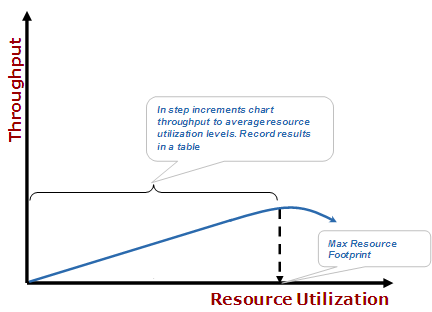
Correlating Resource Consumption to Throughput
When the test is performed it commences with a throughput of zero. Load is then uniformly added in increments. Throughput and resource utilizations are observed and recorded at each increment in load. The test continues until a decrease in throughput is recorded when incrementing load. This indicates that the physical maximum has been reached for one or more resources (the breaking point has been exceeded). A well engineered service will do testing to optimize throughput results, which would result in the most cost effective deployment model. The maximum value for throughput must also be recorded.For each operation a linear equation is recorded as follows for each resource measured:
TP = n x RU + c
Where TP is Throughput and RU is Resource Utilization. c is the resource utilization at rest (zero load), and n is the ratio of increasing throughput with respect to resource utilization and is determined by interpolating the test results.
Since the results are collected in a test environment, the resource specifications for that environment must be recorded at the time of the tests. This is necessary to compute the appropriate scale factor (SF) needed to scale the result based on the different resources levels available on the operational hosting environment. For instance, if the test environment has two CPUs and the operational hosting environment has four CPUs, then the CPU resource scale factor is 2.0. Therefore the equation becomes the following:
TP = SF x (n x RU + c)
When solving for Resource Utilization from Throughput levels the following equation is used:
RU = (TP/SF – c)/n
Where SF is the scale factor needed to translation between available resources levels across the environments.
The results of these tests would be used as follows:
RT1 = SF x (m x RU1 + b)
RT1 is the best Response Time level that can be achieved in the environment being examined. If RT1 exceeds expected SLA levels then the host is not a viable candidate for hosting the operation. The operation will need to be made more efficient or hosted elsewhere.
TP1 = SF x (n x RU1 + c)
TP2 = SF x (n x RU2 + c)
Once a sufficient host has been selected the appropriate bandwidth allocation needs to be assigned and tuned in order to ensure that the service will not exceed its predetermined usage levels and negatively impact the ability of other services to maintain their contracted SLAs.
When a consumer requests to consume a shared service, or requests for additional consumption than previously allowed, the service provisioning process commences. If a consumption request is approved from at least a governance perspective (there are no business reasons preventing consumption by the identified consumer) then a capacity validation is required to ensure that there is available bandwidth available for the service to handle the consumption and still maintain its contracted service level agreements. Further, verification that the additional consumption will not cause the service to exceed the service’s assigned bandwidth (if applicable) needs to be completed. The following steps can be followed utilizing the test data gathered for the target service to verify capacity:
TP1 = SF x (n x RU1 + c)
RU2 = (TP2/SF – c)/n
NNRU = RU2 – RU1
Remaining Bandwidth = BL – UBL – NNRU
Repeat these steps for all operations to be consumed across all affected resources on all affected hardware.
Validating accuracy against the production environment is a good way to understand if the test effort is returning valid results, in addition to giving an estimate of the amount of error in calculations due to hardware differences, additional overhead, etc. The information gleaned from this exercise should be considered in the capacity planning exercise, especially as operational hardware begins to coming close to hitting SLA Barriers, or running out of resources.
The first requirement for validating accuracy is that consumption must be monitored. If there is no information on operation usage statistics then validation cannot be achieved with any real accuracy.
Typically, accuracy can be validated against a single resource type; unless there is a mix of SLA Barriers encountered across several types of resources. The most common resource limiting consumption will be CPU bandwidth though, and if this is the case the CPU Load Average is the best statistic to use when calculating accuracy. Follow the steps below to calculate accuracy.
RU = (TP/SF – c)/n
Error = RUA – RUT
The amount of Error should be relatively small and greater than zero. If negative Error is encountered then testing procedures should be evaluated for accuracy. It is always better to error on the pessimistic side.
When a service is changed, for any reason, it must be revalidated from a capacity perspective as the changes may have impacted the performance experienced through the service (either positively or negatively). This may impact capacity constraints currently established, in addition to SLA Barriers, resource utilization expectations, etc. In this case the change of impact needs to be measured for the new service version and the appropriate instrumentation data with respect to capacity need to be updated.
From the requirements and strategy covered previously the following conceptual instrumentation entities materialize:
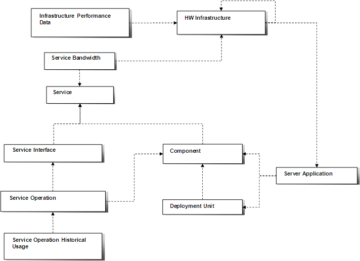
The relationships can be summarized as follows:
As demonstrated in the established capacity planning strategy, instrumentation plays a major role in supporting capacity planning throughout most of the service lifecycle. Within the Service Engineering processes the following information should be collected:
The following sections break down the Service Engineering processes with respect to instrumenting the above mentioned data.
In support of capacity planning and the elements mentioned in the previous section, the following conceptual instrumentation data is realized through the project and service delivery procedures:
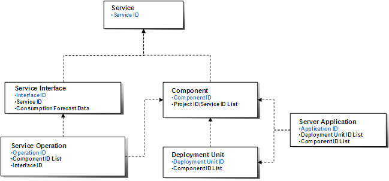
Conceptual Data: Capacity Planning Project & Service Delivery
The Project instrumentation entity is established at the onset of project analysis. There are other elements of this entity that are instrumented for the purpose of measuring engineering effectiveness and SOA maturity levels. For the purpose of operations we are simply using the project to connect it to its operational artifacts and therefore all we need is to be able to uniquely identify the project:
The Service instrumentation entity is established during the Service Definition procedures within Service Delivery. Like the Project entity, there are other elements of this entity that are instrumented for the purpose of measuring engineering effectiveness and SOA maturity levels. For the purpose of supporting the operational processes, we are simply using the service to connect it to its logical operational artifacts and therefore all we need is to be able to uniquely identify the service:
Components are utilized to implement projects and services. The following instrumentation data needs to be recorded for components:
The Deployment Unit is a container for components which will be deployed to hardware in a logical unit. The following instrumentation data is recorded for deployment units:
The Server Application is a container for components, deployment units or possibly event a combination of both. The following instrumentation data is recorded for server applications:
The Service Interface represents the means of accessing a service by consumers. The following instrumentation data is recorded for the Service Interface:
The Service Operation represents the smallest unit of work that can be performed by the service for its consumers. The following instrumentation data is recorded for the Service Operation for the purpose of supporting capacity planning processes:
The illustration below depicts the various instrumentation entities that are defined during the execution of Service Definition and Design activities.
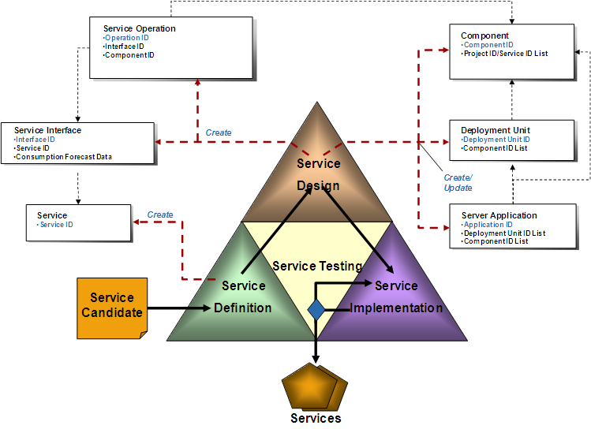
Operational Instrumentation: Service Delivery
During Service Definition, after service boundaries have been defined, the contract for a Service is realized. At this point a Service instrumentation record can be created and uniquely identified. See the Service Engineering Process Monitoring technique for information on instrumentation data collected for the purpose of measuring and monitoring SOA engineering effectiveness. The same instrumentation record is used for Operational instrumentation with respect to traceability in support of capacity planning.
Within Service Design the set of architecturally significant components of a service are analyzed and organized. Therefore the relationship between components, deployment units and server applications, are determined and appropriate instrumentation records need to be established to instrument these relationships in support of capacity planning processes which will need to eventually need to understand the linkage of service operations all the way down to the operationally hardware that they are deployed against.
In additional to the establishment of architectural relationships, the service interface is also crafted during Service Design. The service interface and its operations are defined at a high level and their linkage back to the service should be established for instrumentation purposes. Further, the expected level of consumption for the service through the interface should be forecasted and stored as part of the collected instrumentation data. The forecast data is used in support of the deployment planning process.
The relationships among components, deployment units and server applications are determined during Service Delivery. Similar artifacts should be determined during project delivery activities as those produced in Service Delivery. The illustration below provides an example:
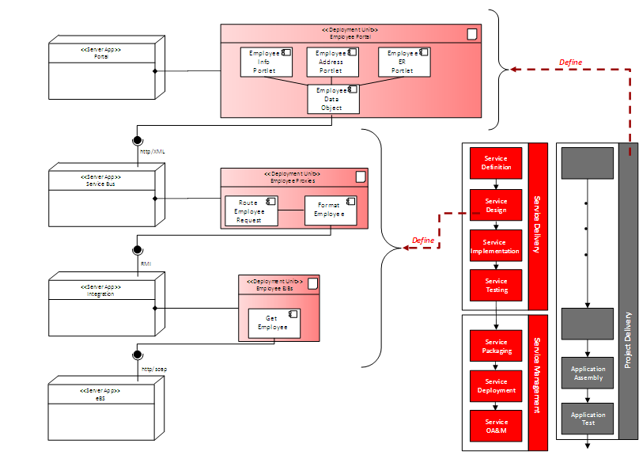
Example: Service and Project Architecture Definition
The diagram above illustrates the complete packaging for a composite application. Part of the work is completed through project delivery activities and the rest during service delivery activities. The separation is established during analysis activities where the separation of shared and independent functionality is defined. (See the Enterprise Requirements Management technique, the SOA Service Identification and Discovery technique and the SOA Release Planning technique for further reading.)
The illustration below depicts the set of instrumentation entities that would result from the example provided above.
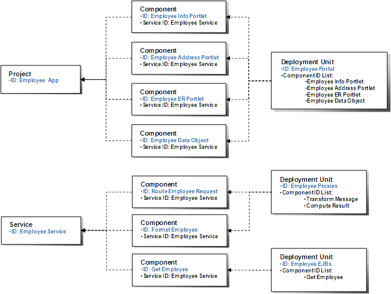
Example: Project and Service Packaging Instrumentation Data
With this technique a clear separation of Project and Service can be established through the packaging architecture. The next step is to drill down to another level and examine the relationships at a deployment architecture level, which will allow for complete traceability back from hardware to the service or project level.
The Service Testing Conceptual Instrumentation data structure is depicted below:
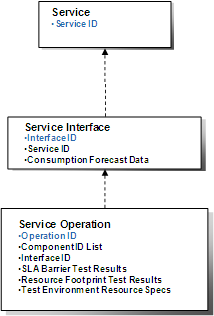
Conceptual Data: Capacity Planning Service Testing
The Service and Service Interface records are simply stated for traceability purposes and are defined as they have been previously in this document.
Similarly, the Service Operation is established earlier, but the following additional data is collected with respect to the service operation during service testing in support of capacity planning:
An example set of test results for the SLA Barrier Test is depicted below:
| Service / HW | Load Ave. | Network IO | Disk IO | Memory | Disk |
|---|---|---|---|---|---|
| Op1 | RT = 1.0RU+ 0.0 SLA Barrier: 6.1 |
RT = 0.3RU + 0.0 | RT = 0.1RU + 0.0 | RT = 0.01RU + 12 | RT = 0.0RU + 8 |
| Op2 | RT = 0.8RU+ 0.0 SLA Barrier: 8.0 |
RT = 0.91RU + 0.0 | RT = 0.1RU + 0.0 | RT = 0.01RU + 12 | RT = 0.0RU + 8 |
| Op3 | RT = 0.2RU+ 0.0 SLA Barrier: 4.8 |
RT = 0.15RU + 0.0 | RT = 0.1RU + 0.0 | RT = 0.01RU + 12 | RT = 0.0RU + 8 |
Example: SLA Barrier Test Instrumentation
An example set of test results for the Resource Footprint test is depicted in the table below:
| Service / HW | Load Ave. | Network IO | Disk IO | Memory | Disk | Max TP |
|---|---|---|---|---|---|---|
| Op1 | TP = 75.3RU + 0.0 | TP = 14.0RU + 0.0 | TP = 12.0RU + 0.0 | RU Constant | RU Constant | 100 |
| Op2 | TP = 8.3RU + 0.0 | TP = 14.0RU + 0.0 | TP = 12.0RU + 0.0 | RU Constant | RU Constant | 14 |
| Op3 | TP = 98.3RU + 0.0 | TP = 14.0RU + 0.0 | TP = 12.0RU + 0.0 | RU Constant | RU Constant | 125 |
Example: Resource Increment Test Instrumentation
The Service Deployment Conceptual Instrumentation data structure is depicted below:
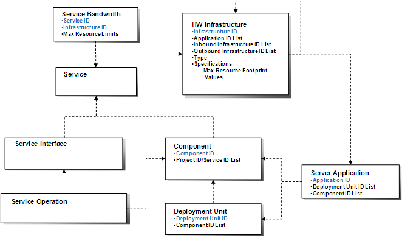
Conceptual Data: Capacity Planning Service Deployment Instrumentation
For the most part, these entities are definite identically to those defined for the purpose of monitoring and managing performance, and are defined to support the traceability requirements identified for capacity planning.
There are some new values conceptual values instrumented for the purpose of capacity planning however.
The following additional value is collected for the Hardware Infrastructure:
A service bandwidth constraint may be established against a service. This concept is used to indicate that the service is restricted to a specified amount of hardware resource bandwidth on a particular component of hardware infrastructure located within the operational environment. The following instrumentation data is collected to support this concept:
For completeness purposes the following is instrumented during Service and Project Deployment activities in support of Capacity Planning:
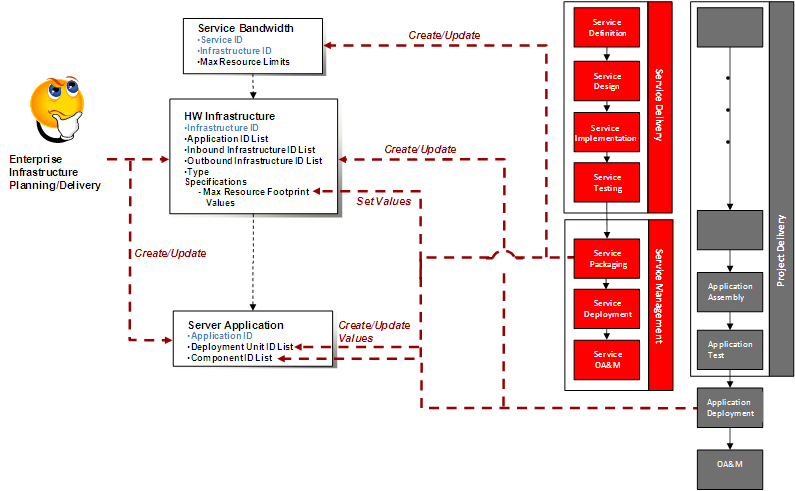
Operational Instrumentation: Project & Service Deployment
The set of Hardware Infrastructure components and the set of Server Applications hosted is defined during service infrastructure realization (and not defined on a service by service basis). During these processes the appropriate relationships between hardware components and service hosting server application infrastructure should be established with respect to instrumentation.
From a project delivery standpoint, any additional hosting requirements (hardware and software) in support of the specific application or project would be established on a project by project basis.
When services are deployed (either new or versioned), the maximum resource footprint values are updated based on isolation test result data. Further, any applicable service bandwidth constraints are established or updated based on the tuning strategy being utilized for the various pieces of hardware.
As services are delivered through service delivery and deployed through service management, the instrumentation records are linked based on the deployment architecture established. The illustration provided below demonstrates this linkage:
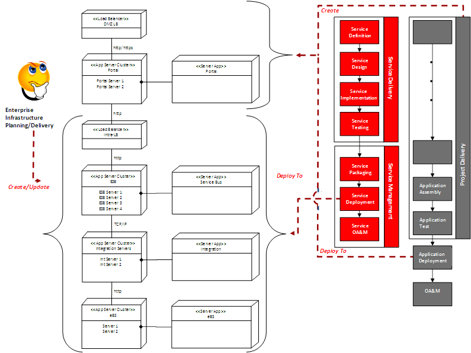
Example: Project and Service Deployment Architecture
Again, the infrastructure in support of the SOA is defined during enterprise infrastructure planning and delivery in support of the enterprise SOA reference architecture. Shared services that are delivered in support of projects and applications are deployed to the shared infrastructure.
When projects and applications are planned and approved, infrastructure is defined to support the project and realized prior to the final delivery of the project. The project specific components and applications are deployed to this hardware once the project has been delivered.
The example deployment architecture provided above would result in the following instrumentation data entity structure being defined against the service Employee Portal application as depicted below:
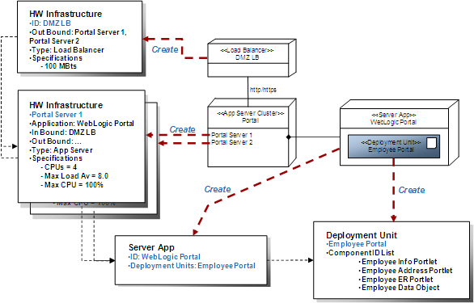
Example: Project Deployment Instrumentation
The example depicted above illustrates the linkage from deployment unit through to hosting hardware, and maps the conceptual instrumentation records to the physical deployment architecture.
The final element of capacity planning comes from monitoring consumption in the operational environment. This allows cross-checks to be done to validate accuracy and compute operational overhead.
The following conceptual instrumentation data is captured in support of the capacity planning processes.
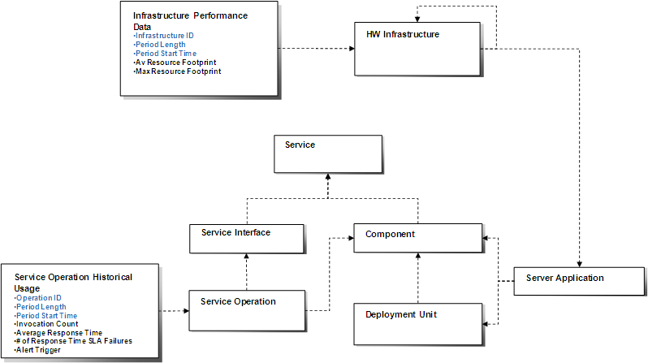
Conceptual Data: Capacity Planning Runtime Influences
The conceptual data for the runtime environment is very similar to the data instrumented from the runtime environment for the purpose of monitoring and managing performance and conformance. There are two conceptual entities to note however.
The Service Operation Historical Usage instrumentation record is used in managing and monitoring performance, and for the purpose of capacity planning, the Invocation Count value is used to calculate actual throughput observed against a given operation.
Finally, the Infrastructure Performance Data record is used to collect average resource utilization statistics for the physical resources on the hardware infrastructure in the operational environment. The following data is instrumented for this record:
The following illustrates the performance data captured in support of the capacity planning processes.
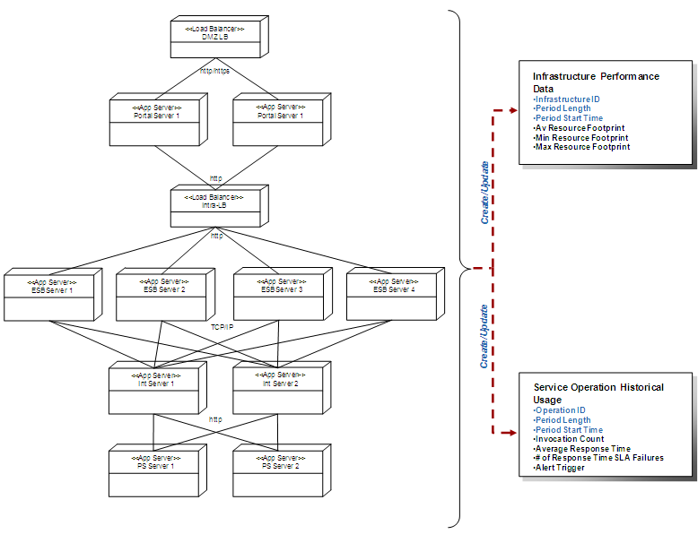
Instrumenting the Runtime Environment
Infrastructure performance metrics are typically collected by using third-party or operating system vendor providing monitoring tools. The service operational historical usage is collected by instrumenting the call invocations on service operations.
There are no templates available to assist with this technique.
This technique is recommended for use in the following OUM tasks:
| Task | Usage |
|---|---|
| If Capacity Planning is one of your measurement areas, then use this technique for capacity planning when using a service-oriented architecture. |
Use the following criteria to check the quality of this technique:

Copyright © 2006, 2016, Oracle and/or its affiliates. All rights reserved.